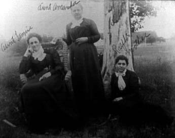

Here's a photograph of the three Mills sisters. From left to right they are: Fannie nee Mills MCDANIEL, Amanda Jane nee Mills FLUENT and Mary Elizabeth (Lizzy) nee Mills COOK. The inscription, by Lizzy's daughter-in-law, Laura Adell nee Breitkreutz COOK, reads "Aunt Fannie, Aunt Amanda [and] Ralph's mother."
Last updated on 26 Oct 1998